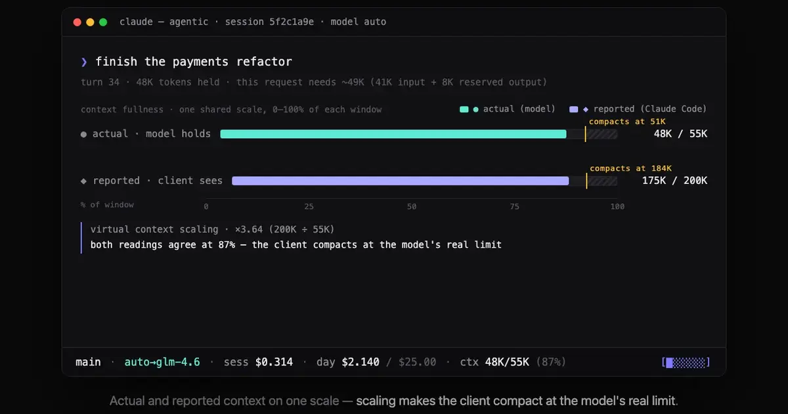
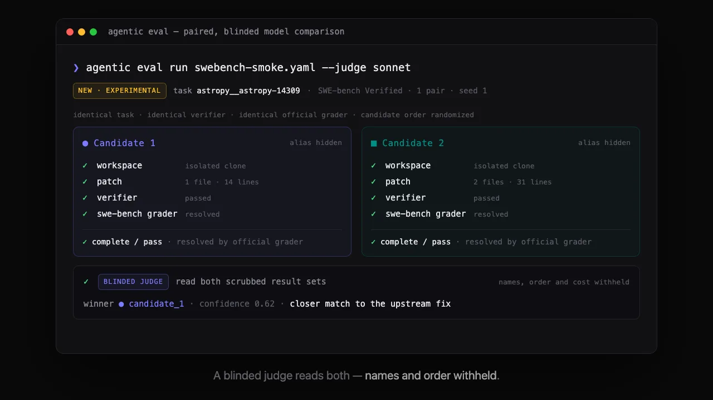

Run Claude Code on any model, with a budget.
agentic wraps Claude Code in a thin local router. Same TUI, same tools, same auto-updates — Anthropic runs byte-faithful passthrough, while OpenAI, xAI, and any OpenAI-compatible endpoint (Ollama, vLLM, OpenRouter) work through full request/stream translation. Every token is metered, priced, and checked against a budget you set. A cheap classifier picks the model for each turn, filtered by which models can actually hold the request; a second, independent pass flags tasks that want a recurring loop instead of a single reply. And now, sessions find and message each other by name.
curl -fsSL
https://raw.githubusercontent.com/maorbril/agentic/main/install.sh
| sh

agentic context and the live budget
statusline underneath.
What Claude Code alone doesn't do.
It's a great harness and it keeps getting better — forking it means losing that. But it only talks to one provider, and it never tells you what a session cost.
Two dialects, every provider
Anthropic runs byte-faithful passthrough. Everything else —
OpenAI, xAI, Ollama, vLLM, OpenRouter, a local llama.cpp
server — works through the same request/stream translation.
Model names are aliases you define in
config.yaml.
Every token priced
A local SQLite log prices every request as it happens.
agentic cost --by model breaks spend down by
model, profile, or session.
Budgets that actually stop you
Daily, weekly, monthly caps, global or per profile. Hit one and the router refuses the next request with a clear message in the TUI — in-flight responses are never cut.
Two classifiers watch every turn
--model auto sends planning to a big model and
mechanical edits to a cheap one, sticky for the whole turn.
The same classifier call can also name a task specialist —
see task routing below. A second,
independent pass, Auto Goal, flags tasks that need a
recurring check-in — a flaky test, a long build — and
nudges Claude Code toward ScheduleWakeup or
/loop instead of a single reply.
Context scaling per model
Claude Code sizes auto-compact for a ~200K Claude window.
Declare a model's real context_window (and an
effective_context below it, if the model gets
unreliable early) and the router scales every token count it
reports, so a 32K local model and a 400K one both compact at
the right moment — never against a window they don't have.
Size-aware routing, before it fails
The auto-router checks a request's size against each candidate model's window before picking one, so a large prompt skips tiers that can't hold it instead of overflowing one that can't. Anything still too large for every configured model gets refused with a clear error, before it reaches a provider.
Subagents on any model
Claude Code's Agent tool is normally pinned to
sonnet | opus | haiku | fable.
agentic agents sync writes one subagent
definition per configured model alias, so a routed model
becomes selectable by name —
subagent_type: "agentic-qwen" — and its traffic
is priced and budgeted like anything else.
No daemon, no fork
The first session binds the router port; when it exits, another running session takes over in seconds. Claude Code stays unmodified and keeps auto-updating on its own.
Profiles you switch on the fly
Bundle a main model, a fast background model, and a budget
into a profile. -p cheap for one session,
--model grok for one request.
No wrapper in the launch path
Claude Code sessions now find and message each other
natively, so agentic dropped its own launch wrapper —
claude starts directly, one less subprocess and
PTY hop between you and the TUI.
Find the other session by the name you'd actually say.
Claude Code sessions can message each other natively now — but
session names are auto-derived from whatever a session is doing,
so the name you'd say out loud is usually the project directory,
not the name it registered under. agentic peers
matches on both, reads Claude Code's own session registry, and
hands back the exact session to send to. Ties are surfaced as
ties: messaging the wrong project is worse than a question.
# "the labs-service one" — matched on name and cwd ❯ agentic peers labs-service-secondlife-be Best match for "labs-service-secondlife-be": daily-case-runtime busy ~/code/secondlife/labs-service started 12h ago
agentic setup writes this workflow into
~/.claude/CLAUDE.md, so plain claude
sessions pick it up too. Sessions on a Claude Code build older
than 2.1.224 don't register a peer socket and stay unreachable
until restarted.
The gauge tracks the model, not the label.
Claude Code sizes auto-compact for the ~200K window it assumes.
agentic scales every token count it reports so a 32K local model
and a 400K one both compact at the moment that's actually right
for them — and a request too large for anything you've
configured is refused before it reaches a provider, not after.
See it in motion in the hero above; agentic context
below shows the same numbers as plain text.
# same session, two models configured ❯ agentic context sess_4f21 model window effective used reported compact-at qwen-32k 32K 28K 27,940 99.8% ✓ compacted sonnet 200K 200K 27,940 14.0% —
Three ways to get Claude Code off one provider.
agentic isn't the only answer to "I want Claude Code but not locked to Anthropic." Here's how the options actually differ.
| agentic | claude-code-router · proxy forks · LiteLLM | OpenCode, Crush, Goose, Aider | |
|---|---|---|---|
| Harness | Real Claude Code, unmodified, auto-updating | Real Claude Code, unmodified | Different harness entirely — own prompts, tools, TUI |
| Runs as | Static Go binary, no daemon (leader election over a fixed port) | Daemon / server process you deploy and administer | Standalone CLI you run instead of Claude Code |
| Cost & budgets |
First-class CLI: agentic cost, live
statusline, hard-stop daily / weekly / monthly budgets
|
Usually a dashboard (LiteLLM) or not built in | Varies by tool, rarely budget-gated |
| Model routing |
Aliases + a built-in LLM-classifier tier router
(auto), size-aware and sticky per turn,
with optional per-task specialist overrides
|
Rule-based routing configs; no classifier-based tiering | Manual model switch, no auto-routing |
| Memory | Composes with clauder — separate binary, optional | Not their concern | Varies |
| Multi-session |
agentic peers resolves a session by name or
project directory
|
Not their concern | Varies |
agentic doesn't try to be a better harness than Claude Code — it
keeps Claude Code exactly as Anthropic ships it and only swaps
what's behind ANTHROPIC_BASE_URL. Want a different
agent loop entirely? OpenCode, Crush, Goose, and Aider are the
right layer to look at. Want a gateway you deploy and administer
for a team? LiteLLM is more mature for that. agentic is for one
developer who wants claude, unmodified, with a
budget and a cheap-model escape hatch — installed in one command,
with nothing to operate.
A gateway, plus the CLI around it.
Claude Code already supports pointing at a gateway via
ANTHROPIC_BASE_URL. agentic is that gateway — it
never touches Claude Code's source.
Install
One command drops the binary in
~/.local/bin. agentic setup
writes a config, registers the statusline, and offers to
install anything missing.
Run agentic
It starts the local router, points Claude Code at it via
ANTHROPIC_BASE_URL, and hands you the exact
same TUI you already know.
The router does the rest
Resolves the model alias, translates the dialect if needed, logs priced usage, checks the budget — then streams the response straight back.
# default profile, tracked ❯ agentic # same session, cheaper models ❯ agentic -p cheap # one-off model override ❯ agentic --model grok # where did today's $4.31 go? ❯ agentic cost --by model opus $2.87 sonnet $1.12 qwen $0.32
Same tier, different specialist.
Tiering alone can't say that ordinary implementation work and
architecture review need comparable capability but do better on
different models. An optional tasks: map adds that
second dimension on top of tiering, from a fixed label set:
implementation, sql_data,
debugging, code_review,
architecture, security_review,
critical_review. The classifier's one call per turn
returns both the tier and, if configured, the task — no extra
classifier request, just a fraction of a cent depending on
classifier and prompt.
# tier router, plus specialists for two labels ❯ agentic routing set auto --classifier haiku \ --deep opus --standard sonnet --light qwen \ --task implementation=grok --task security_review=fable # later calls merge into this rule; --task label= removes one ❯ agentic routing list ALIAS CLASSIFIER DEEP STANDARD LIGHT TASKS auto haiku opus sonnet qwen implementation=grok, security_review=fable # tier and model disagree — the task override is what moved it ❯ grep autoroute ~/.agentic/router.log ... tier=standard model=grok reason=task:implementation ... tier=deep model=fable reason=task:security_review
A task label only wins if its model fits the request's context
and size budget; otherwise the request stays on the classified
tier's own model. The label set is fixed, not customizable, and
this is a model-selection hint, not a security boundary —
naming security_review picks a model, it doesn't
enforce a review policy. Pinned sessions
(pin_tiers / X-Agentic-Pin-Model)
bypass task routing the same way they bypass tiering.
New · experimental Paired model evals, blinded
agentic eval runs a baseline model and a candidate
on the same coding tasks, each in its own isolated workspace, and
records the route and usage for both. An optional judge compares
the resulting patches without seeing which one is which. It's
new, still rough at the edges, and meant for your own coding
tasks or a pinned SWE-bench manifest — not yet a general
leaderboard tool.

agentic eval run executes baseline and candidate in
separate workspaces, then agentic eval report
prints wins, ties, and verifier pass/fail for a blinded judge
comparison — no model identity leaks into the judge's prompt.
Plain Claude Code vs. agentic
| Plain Claude Code | agentic | |
|---|---|---|
| Same TUI, tools, auto-updates | yes | yes |
| Non-Anthropic models | — | OpenAI, xAI, any OpenAI-compatible endpoint |
| Per-session cost tracking | — | priced & logged |
| Spend budgets & caps | — | day / week / month |
| Per-task model routing | — | classifier-driven |
| Requires forking Claude Code | n/a | never |
Fine print
How is this billed?
Traffic through the router is billed to your
API keys, not your Claude Pro/Max
subscription. OAuth credentials are never proxied. For
subscription billing, use a passthrough: true
profile — normal claude, no tracking.
Do the non-Anthropic models feel as good?
They work through translation, but Claude Code's prompts and tool patterns are tuned for Claude, so expect them to be clunkier in the main loop. They're better used as cheap workhorses for background tasks and subagents. Translation keeps getting more reliable — tool-call IDs from translated models are sanitized so malformed ones don't corrupt a turn, and a turn that reasoned on a translated model no longer breaks the next turn on a native Anthropic one: unsigned thinking blocks are repaired before replay instead of retry-looping as "Tool use interrupted."
What's experimental right now?
agentic eval — paired baseline-vs-candidate
coding runs with an optional blinded judge. It works and
produces real artifacts, including a documented one-task
SWE-bench comparison, but it's new, the interface can still
change, and one task is a smoke test, not a model ranking.
Is Claude Code modified?
No. agentic launches the unmodified, auto-updating
claude binary and points it at the local router
via ANTHROPIC_BASE_URL — an officially supported
gateway hook.
Is it secure?
The router binds 127.0.0.1 only and requires a
per-install token (mode 0600), so other local processes can't
spend on your keys. Keys live in ~/.agentic/env,
never in the config file.
What does agentic itself cost?
Nothing — it's MIT-licensed. You pay your model providers for the tokens you use, which is exactly what agentic measures and caps.
One command to a tracked session.
curl -fsSL
https://raw.githubusercontent.com/maorbril/agentic/main/install.sh
| sh